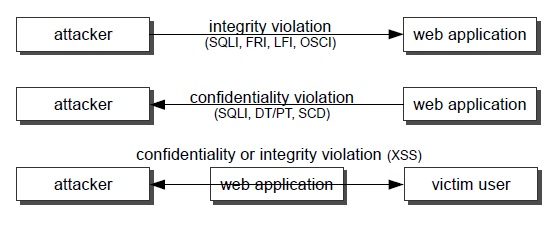

Abstract
The security of web applications continues to be a challenging problem. An important part of that problem derives from vulnerable source code, often written in unsafe languages like PHP. Source code static analysis tools are a solution to find vulnerabilities, but they tend to generate false positives and require considerable effort for programmers to manually fix the code. We explore the use of a combination of methods to discover vulnerabilities in source code with less false positives. We combine taint analysis, which finds candidate vulnerabilities, with data mining, in order to predict the existence of false positives. This approach brings together two approaches that are apparently orthogonal: humans coding the knowledge about vulnerabilities (for taint analysis) versus automatically obtaining that knowledge (with machine learning, for data mining). Given this enhanced form of detection, we propose doing automatic code correction by inserting fixes in the source code.
Introducion
The project explores an approach for automatically protecting
web applications while keeping the programmer in the loop.
The approach consists in analyzing the web application source
code searching for input validation vulnerabilities and inserting
fixes in the same code to correct these flaws.In this project we explore the use of a novel combination of methods
to detect this type of vulnerabilities: static analysis and data
mining. Static analysis is an effective mechanisms to find
vulnerabilities in source code, but tends to report many false
positives (non-vulnerabilities) due to its undecidability .